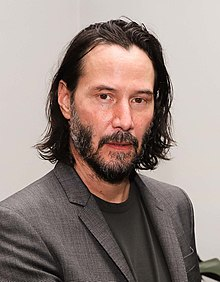

Киа́ну Чарльз Ривз— канадский актёр, кинорежиссёр, кинопродюсер и музыкант (бас-гитарист). Наиболее известен своими ролями в киносериях «Матрица» и «Джон Уик», а также в фильмах «На гребне волны», «Адвокат дьявола», «Константин: Повелитель тьмы».
Ривз работал с такими известными кинорежиссёрами, как Стивен Фрирз («Опасные связи», 1988), Гас Ван Сент («Мой личный штат Айдахо», 1991), Фрэнсис Форд Коппола («Дракула», 1992) и Бернардо Бертолуччи («Маленький Будда», 1993). В 2013 году сам дебютировал в качестве режиссёра, сняв фильм о боевых искусствах «Мастер тай-цзи».
Ссылаясь на его игру в фильме «На гребне волны» (1991), критик газеты The New York Times Джанет Маслин хвалит актёрскую многосторонность Ривза, говоря, что он «проявляет значительную дисциплину и диапазон. Он легко перемещается между выдержанным поведением, подходящим для полицейско-процедурной истории, и гибкой манерой его комических ролей».
31 января 2005 года Киану Ривз получил звезду на голливудской «Аллее славы». Является самым высокооплачиваемым актёром (англ.)русск. в истории кинематографа по соотношению суммы разового гонорара к совокупной сумме заработка ($30 к $156 млн).
Киану Ривз родился в Бейруте, столице Ливана, в семье англичанки Патрисии Бонд (в девичестве — Тейлор) и уроженца Гавайев Сэмьюэла Ноулина Ривза-младшего, американца с английскими, ирландскими, португальскими, гавайскими и китайскими корнями. Патрисия познакомилась с Сэмьюэлом в Бейруте, где работала. Он был тогда неквалифицированным рабочим, аттестат зрелости получил, отбывая срок заключения на Гавайях, будучи осужденным по обвинению в продаже героина в аэропорту. В дальнейшем приобрел специальность геолога. Он бросил свою жену и семью, когда их сыну было три года. В настоящее время[уточнить] Ривз не поддерживает отношений с отцом.
В детстве Ривзу часто приходилось менять место жительства, переезжая вместе с матерью, которая после развода в 1966 году стала художником по костюмам. Сначала они перебрались в Австралию, затем в Нью-Йорк. Там его мать познакомилась с бродвейским и голливудским режиссёром Полом Аароном и вышла за него замуж. Семья переехала в Торонто; пара развелась в 1971 году. В 1976 году Патрисия вышла замуж за Роберта Миллера, рок-промоутера; они развелись в 1980 году. Брак с четвёртым мужем, парикмахером Джеком Бондом, закончился в 1994 году.
Ривз больше преуспевал в хоккее, нежели в академических дисциплинах, поскольку процесс образования был осложнен для него дислексией. Ривз мечтал стать хоккеистом, выступающим за честь Канады на Олимпиаде, однако травма поставила на его мечтах о хоккее крест. Позднее Киану посещал альтернативную бесплатную школу («Avondale Alternative»), что позволяло ему получать образование и подрабатывать в качестве актёра одновременно. Позже он бросил школу, так и не получив аттестат о среднем образовании.
Около девяти лет с начала своей звёздной карьеры Ривз предпочитал жить в съёмных домах и отелях. Он достаточно долго был постояльцем известного калифорнийского отеля «Шато Мармон». Ривз купил свой первый дом в лос-анджелесском районе Голливуд Хиллз примерно в 2003 году. У него также имеется квартира в районе Центрального парка в Нью-Йорке.
Ривз никогда не был женат. В декабре 1999 года у него и его подруги, киноактрисы Дженнифер Сайм, родилась мёртворождённая дочь, Ава Арчер Сайм-Ривз. Сайм погибла в автокатастрофе в апреле 2001 года в Лос-Анджелесе.
В 2008 году на Ривза подал в суд папарацци Элисон Силва. Силва требовал выплатить ему 711 974 доллара за побои и травмы, которые актёр якобы нанёс ему. Судебная тяжба с папарацци длилась полтора года, в течение которых Силва продолжал атаковать Ривза и требовать выплат. На суде всем двенадцати присяжным заседателям понадобился всего час обсуждения, чтобы вынести вердикт и единогласно отклонить иск. Ривз был полностью оправдан.
Хоть Киану Ривз и попал в список «Известные атеисты», он неоднократно говорил о вере в Бога или другие высшие силы. Киану не говорит, что значит для него религия: «Я думаю, что это очень личное». Он не получил христианского воспитания, но всегда интересовался вопросами веры: «Я искал ответы на вопросы о Боге. В 11 лет я даже присоединился ненадолго к группе, изучающей Библию, но это было скучно».
Несмотря на всю известность Киану Ривза, он часто появляется на улицах грустным и в полном одиночестве. Его можно встретить сидящим на лавочке в парке, пьющим кофе на бетонном бордюре или читающим газету в метро. В 2010 году фотография грустного Ривза, поедающего сэндвич, привела к появлению интернет-мема «Грустный Киану». На фанатской страничке актёра в Facebook 15 июня был объявлен «Неофициальным днём поднятия настроения Киану Ривзу». Свои дни рождения Киану чаще всего отмечает тихо и незаметно. 50-летний юбилей он отметил дома, со своей сестрой.
В ноябре 2019 года стало известно о новых отношениях Ривза с художницей и скульптором Александрой Грант, которая младше его на 9 лет